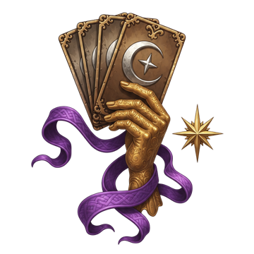
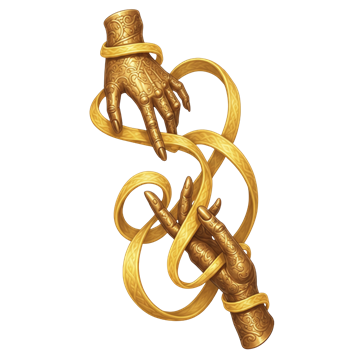
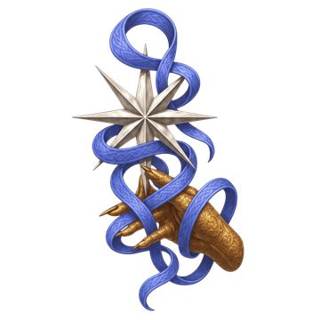

Weaver Hand: Summon
- Cantrip
- Conjuration
- Concentration
- Cast
- Action
- Range
- 9m
- Duration
- 10 turns
Summon an invisible hand that can manipulate and interact with objects.
Can't be cast in combat.

Class · Chosen of Mystra
We were chosen by the Lady of Mysteries, and the Weave answers when we pull on its threads.
An Arcana
Bound to the Weave by Mystra's own hand, the Arcana are at once her chosen and her instruments. They draw upon mysteries granted to few, reshaping the flow of magic around them and turning it against those who would unravel it. The Arcana is a seer first: it foresees rolls, uncovers what is hidden and opens paths no one else can. How it fights is decided by its destiny, one of five Major Arcana chosen at level 1.
Mystra, the Lady of Mysteries, keeps the Weave: the fabric that every spell in the Realms is cast through. Wizards spend their lives learning to touch it. The Arcana never had to. Mystra bound them to the Weave with her own hand, and they carry it in them as her chosen and her instruments.
Being chosen gives sight before it gives power. An Arcana sees the threads running through a room, a lock, a lie or a fight, and pulls on them: a roll foreseen and replaced, a door sealed shut, a hidden creature laid bare. That sight is the class itself, the part every Arcana shares whatever their path.
What an Arcana becomes in battle is a destiny. Mystra weaves each of her chosen from one of the Major Arcana, the great cards of the tarot that tell the turns of a life: the first step into the unknown, the veil over a secret, the light that remains after disaster, the ending that refuses to be final, the balance poured between two feelings. That card is drawn at level 1, when you choose your subclass, and it shapes the whole character, from armour and weapons to the second ability its magic leans on. In combat, each destiny can awaken its card's Aspect.
The Arcana itself holds no single card. Its emblem is a hand holding the whole spread, because every destiny starts there, and its card in this guide bears only Mystra's star.
The Arcana is a seer. Most of its own features belong to the road between fights: Weave Knowledge turns a skill check into a Critical Success, Third Eye sees through darkness and invisibility, Arcane Gate carries the party across a gap, and an Arcane Familiar scouts ahead. In battle the base class offers Portent and a set of Weaver Hand spells. The weight of your turn comes from your destiny, which supplies the spells you cast most often. Every spell, from the class or the destiny, spends the same Woven Spell Slots, and all of them rise in level together, so a spell learned at level 1 keeps pace with you to the end.
| Hit Points | 6 + your Constitution modifier at level 1, then 4 + your Constitution modifier per level |
|---|---|
| Spellcasting Ability | Intelligence, for every destiny |
| Secondary Ability | Set by your subclass: Unbound Dexterity · Deceiver Charisma · Starchild Wisdom · Eternal Constitution · Resonant Wisdom |
| Saving Throws | Set by your subclass: Unbound Dexterity, Wisdom Deceiver Charisma, Intelligence Starchild Wisdom, Constitution Eternal Constitution, Strength Resonant Wisdom, Charisma |
| Armour | Set by your subclass: Unbound none Deceiver Light Armour Starchild Light Armour, Medium Armour, Shields Eternal Light Armour, Medium Armour, Heavy Armour, Shields Resonant Light Armour |
| Weapons | Set by your subclass: Unbound none (unarmed strikes) Deceiver Daggers, Light Crossbows, Quarterstaffs; also Musical Instruments Starchild Clubs, Daggers, Javelins, Maces, Quarterstaffs, Sickles, Spears Eternal Light Hammers, Clubs, Maces, Greatclubs, Warhammers, Mauls Resonant Daggers, Quarterstaffs, Light Crossbows, Darts |
| Skills | Choose 4 from your subclass's list, then gain Expertise in 2 of them. Unbound Acrobatics, Animal Handling, Arcana, Athletics, Nature, Perception, Sleight of Hand, Survival Deceiver Arcana, Deception, History, Insight, Investigation, Perception, Performance, Persuasion Starchild Animal Handling, Arcana, History, Medicine, Nature, Perception, Religion, Survival Eternal Arcana, Athletics, History, Intimidation, Medicine, Nature, Religion, Survival Resonant Animal Handling, Insight, Intimidation, Medicine, Perception, Performance, Persuasion, Religion |
| Suggested Abilities | Character creation adds +2 and +1 to two abilities. Each subclass suggests (Str · Dex · Con · Int · Wis · Cha): Unbound 10 · 15 · 10 · 15 · 13 · 8 Deceiver 8 · 10 · 13 · 15 · 10 · 15 Starchild 8 · 10 · 13 · 15 · 15 · 10 Eternal 13 · 8 · 15 · 15 · 10 · 10 Resonant 8 · 10 · 10 · 15 · 15 · 13 |
| Starting Equipment | Every Arcana: shoes, camp clothes, 2 Potions of Healing, a Scroll of Revivify, a keychain, an alchemy pouch and camp supplies. Your subclass adds its outfit and: Unbound nothing else Deceiver a Dagger, a Light Crossbow and a musical instrument of your choice Starchild a Mace and a Shield Eternal a breastplate and a Maul Resonant nothing else |
Marked rows are levels where your subclass gains a feature. See your destiny's page for what it is.
| Level | Prof. | Features | Slot Level | Woven Slots |
|---|---|---|---|---|
| 1 | +2 | Weaver Hand cantrips, Weaver Hand spells, Arcane Familiar Subclass feature | 1 | 2 |
| 2 | +2 | Portent, Weave Knowledge, Arcane Recovery | 1 | 4 |
| 3 | +2 | Subclass feature | 2 | 6 |
| 4 | +2 | Expert Divination, Arcane Lock, Arcane Unlock Feat | 2 | 8 |
| 5 | +3 | Subclass feature | 3 | 10 |
| 6 | +3 | Dispel Magic | 3 | 12 |
| 7 | +3 | Subclass feature | 4 | 14 |
| 8 | +3 | Third Eye Feat | 4 | 16 |
| 9 | +4 | Subclass feature | 5 | 18 |
| 10 | +4 | Third Eye: Projection | 5 | 20 |
| 11 | +4 | Subclass feature | 6 | 21 |
| 12 | +4 | Arcane Gate Feat Subclass feature | 6 | 22 |
| 13 | +5 | Subclass feature | 6 | 22 |
| 14 | +5 | — | 6 | 22 |
| 15 | +5 | Subclass feature | 6 | 22 |
| 16 | +5 | Feat | 6 | 22 |
| 17 | +6 | Subclass feature | 6 | 22 |
| 18 | +6 | — | 6 | 22 |
| 19 | +6 | Subclass feature | 6 | 22 |
| 20 | +6 | Feat Subclass feature | 6 | 22 |
Every Arcana casts with Woven Spell Slots, lengths of the Weave held ready. All your slots share a single level, your Slot Level, which rises every two character levels until it reaches 6 at level 11. You also hold far more of them than most casters, and the count keeps growing until level 12.
| Level | 1 | 2 | 3 | 4 | 5 | 6 | 7 | 8 | 9 | 10 |
|---|---|---|---|---|---|---|---|---|---|---|
| Slot Level | 1 | 1 | 2 | 2 | 3 | 3 | 4 | 4 | 5 | 5 |
| Woven Slots | 2 | 4 | 6 | 8 | 10 | 12 | 14 | 16 | 18 | 20 |
| Level | 11 | 12 | 13 | 14 | 15 | 16 | 17 | 18 | 19 | 20 |
|---|---|---|---|---|---|---|---|---|---|---|
| Slot Level | 6 | 6 | 6 | 6 | 6 | 6 | 6 | 6 | 6 | 6 |
| Woven Slots | 21 | 22 | 22 | 22 | 22 | 22 | 22 | 22 | 22 | 22 |
A spell always spends a slot of your current Slot Level, whatever its own level, and uses that level's values. A level 1 spell cast by a level 9 Arcana spends a level 5 slot and hits as hard as a level 5 spell would. Each spell's At higher levels line in this guide shows what it gains per slot level, up to level 6. When your Slot Level rises, every spell you know grows with it.
Almost every Arcana spell is Always Prepared: it sits in your spellbook ready to cast and never needs preparing. Every spell your destiny grants is Always Prepared, as are the two Weaver Hand cantrips you choose and the base class's utility spells.
Two groups work differently. The six Weaver Hand spells you learn at level 1 and the six Weave Knowledge spells you learn at level 2 go into your spellbook as spells you prepare. Outside combat, choose which of them to keep ready; the spellbook shows how many you can prepare at once.
Cantrips (level 0 spells) cost no slot. Most of the base class's utility spells, such as Arcane Lock, Third Eye and Arcane Gate, also cost only an action, and are limited by a cooldown or by being usable only outside combat. Each entry below says which.
Intelligence is your spellcasting ability for every destiny.
Each destiny also leans on a secondary ability of its own, which its spells and its Aspect reward. See Core Arcana Traits.
All Woven Spell Slots return after a Long Rest. Between rests, Arcane Recovery regains 1 slot once per Long Rest.
Base class features only. Your destiny's features are on its own page.
Weaver Hand cantrips. Choose 2 of the following. They are Always Prepared.
Summon an invisible hand that can manipulate and interact with objects.
Can't be cast in combat.
Protect an ally so they take only half damage from Bludgeoning, Piercing, and Slashing attacks.
Can only be cast in combat.
A flame in your hand sheds a light in a 9m radius and deals 1d8 Fire damage when thrown.
Can't be cast in combat.
Enlarge an ally. The target's weapon and unarmed attacks deal an additional 1d4 damage. It has Advantage on Strength Checks and Saving Throws.
Weaver Hand spells. You learn all six as level 1 spells you prepare (see Spellcasting).
The target gains a +1d4 bonus to Ability Checks.
Can't be cast in combat.
At higher levels: +1d4 per slot level: +2d4 with a level 2 slot, up to +6d4 with a level 6 slot.
Command a creature to flee, move closer, freeze, drop to the ground or drop its weapon. Choose the command when you cast:
Undead and allies can't be targeted.
At higher levels: one more target per slot level: 2 targets with a level 2 slot, up to 6 with a level 6 slot.
Deal 1d8 Necrotic damage. Prevent the target from healing until your next turn. The target cannot help Downed characters. An undead target receives Disadvantage on Attack Rolls.
At higher levels: +1d8 per slot level: 2d8 Necrotic with a level 2 slot, up to 6d8 Necrotic with a level 6 slot.
Each flammable target is hit with 1d4 Fire damage, halved on a successful save. The flames ignite surfaces and set objects Burning.
At higher levels: +1d4 per slot level: 2d4 Fire with a level 2 slot, up to 6d4 Fire with a level 6 slot.
Blind creatures up to a combined 33 hit points.
At higher levels: +11 hit points per slot level: 44 with a level 2 slot, 55 with level 3, 66 with level 4, 77 with level 5, 88 with level 6.
Deal 1d8 Lightning damage. The target cannot use reactions. This spell has Advantage on creatures with metal armour.
At higher levels: +1d8 per slot level: 2d8 Lightning with a level 2 slot, up to 6d8 Lightning with a level 6 slot.
Choose 1 Arcane Familiar.
Wherever you go, you can summon your Arcane Familiar to your side.
Your choice unlocks a level 1 Conjuration spell that summons that familiar. It costs no slot, can't be cast in combat, and the familiar stays until dismissed.
| Familiar | What it does |
|---|---|
| Cat | Can Meow to distract your enemies. |
| Crab | Slows enemies with its Crippling Pinch. |
| Dog | Discovers many things hidden around the world and can Bite enemies. |
| Frog | Spreads its Bufotoxin to enemies. |
| Rat | Has an Infectious Bite. |
| Raven | Can Blind enemies with its beak. |
| Spider | Has a poisonous Bite. |
After each Long Rest, you foresee two Portent dice. When a creature near you makes an Attack Roll or a Saving Throw, you can use your reaction to replace its result with one of your Portent dice.
In the stillness, the Weave draws itself taut again.
Regain 1 Woven Spell Slot. Costs no slot. Always Prepared.
Weave Knowledge. You learn all six as level 1 spells you prepare. Each costs a Woven Spell Slot and can't be cast in combat. While it lasts, checks of its skills are always a Critical Success.
Gain the ability to detect supernatural creatures in a range of 99m, and also to recognise magic and interact with enchanted items. When you make an Arcana check, you automatically roll a Critical Success.
Gain the ability to recognise deities and understand holy rites, and also to remember the past of the world and its people. When you make a History or Religion check, you automatically roll a Critical Success.
Gain the ability to read the thoughts of certain creatures, and also read people and situations, and detect lies. When you make an Insight check, you automatically roll a Critical Success.
Gain the ability to comprehend and communicate with beasts, and also to recognise plants and influence animals. When you make a Nature or Animal Handling check, you automatically roll a Critical Success.
Gain the ability to Seal Wounds, and also to recognise symptoms and diagnose diseases. When you make a Medicine check, you automatically roll a Critical Success.
Gain the ability to sing and to play any musical instruments, and also to entertain audiences and command the stage. When you make a Performance check, you automatically roll a Critical Success.
You foresee a third Portent die after each Long Rest. After a Short Rest, you also receive a prophecy for each Portent die you have spent; fulfil it to regain that die.
Close a door or container with a magical lock. It can no longer be lockpicked or opened with Knock.
Costs no slot. Can't be cast in combat. Always Prepared.
Unlock an object that is held shut by a mundane or a magical lock.
Costs no slot. Can't be cast in combat. Always Prepared.
Dispel the magical energies surrounding a character or object.
Costs no slot. Can't be cast in combat. Always Prepared.
Unveil secrets hidden within the gloom and the veil. You gain the ability to see normally in darkness, both magical and non-magical, to a distance of 24m, and also the ability to see Invisible creatures and objects.
Costs no slot. Can't be cast in combat. Always Prepared.
Project your Third Eye as an invisible, magical eye to scout the path ahead.
Costs no slot. Can't be cast in combat. Always Prepared.
Create two linked teleportation portals.
Costs no slot. Always Prepared.
Every destiny carries the Aspect of its card, and in the middle of a fight it can wake. From level 3 your subclass gains a passive named for its card, such as 0 - The Fool: Awakening, which sets a goal: something your destiny does well, counted while the fight goes on. Reach the goal and the Aspect stirs.
The awakening has three tiers, each with its own goal, unlocked by level:
Each goal you reach awakens one more tier, and the tiers stack. Everything you awaken lasts until combat ends; the next fight begins from nothing. While a goal is still ahead, the status Awakening Progress shows how close you are. Once a tier wakes, a status named for your card and tier, such as 17 - The Star: Awakened II, lists every bonus you hold.
| Destiny | Aspect | What awakens it | Goals (Tier I · II · III) | Tiers |
|---|---|---|---|---|
| The Unbound 0 · The Fool | Curiosity | Strike different enemies with attacks within a single round | 3 · 4 · 5 enemies | Wanderlust · Restless Wind · Aspect of Curiosity |
| The Deceiver II · The High Priestess | Doubt | Apply stacks of Doubt to your enemies | 4 · 7 · 10 stacks | Veiled · Two Pillars · Aspect of Doubt |
| The Starchild XVII · The Star | Hope | Restore hit points to your allies | 5 · 8 · 12 times your level | Beacon · Sunrise · Aspect of Hope |
| The Eternal XIII · Death | Sorrow | Lose hit points; healing doesn't undo the loss | 30% · 50% · 70% of your hit point maximum | Sorrow · Mourning · Aspect of Sorrow |
| The Resonant XIV · Temperance | Empathy | Make the moods you weave react | 3 · 5 · 7 reactions | Attunement · Harmony · Aspect of Empathy |
Each destiny's page details its goal and every bonus its tiers grant.
At level 1 you choose the card Mystra wove you from. Your destiny sets your saving throws, armour, weapons, skills and secondary ability, grants most of the spells you cast in combat, and holds the Aspect you awaken.

0 · The Fool
The Unbound
We leap before we look, and the Weave catches us wherever we land.
Mystra wove the Unbound from the first step of every journey, a thread that answers only to curiosity and the open road. They wear no armour and strike with open hands and moving air, slipping past every blow until the ground itself stops holding them down.

II · The High Priestess
The Deceiver
We keep the veil between what is and what seems, and the Weave lets us stand on either side of it.
Mystra wove the Deceiver from the veil between what is and what seems, a thread that no one watching can follow. They scatter Doubles that shatter when struck, sow Doubt until enemies can't trust their own eyes, and bind them with Sigils and chains.

XVII · The Star
The Starchild
We keep a light burning after every fall, and the Weave lets us pour it into the wounded.
Mystra wove the Starchild from the light that remains after disaster, a thread of hope that never stops shining. They mend wounds that should have been fatal, shelter their allies beneath solar and lunar wards, and call the fallen back from the edge of death.

XIII · Death
The Eternal
We have crossed our own ending, and the Weave turns every wound we take into strength.
Mystra wove the Eternal from an ending they refused to accept, a thread that crossed death and came back changed. They take the blows meant for others and grow harder to kill for it, draining the life from their foes and calling the grave to finish what their hammer began.
XIV · Temperance
The Resonant
We feel what you feel before you do, and the Weave lets us turn it into something else.
Mystra wove the Resonant from the feelings that pass between every living thing, a thread that tempers one emotion with another. They surge joy, trust or fear into a creature's Weave, then braid what lingers into stronger feelings that lift allies and break enemies from within.